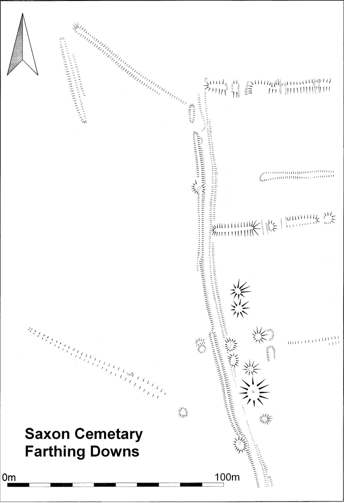
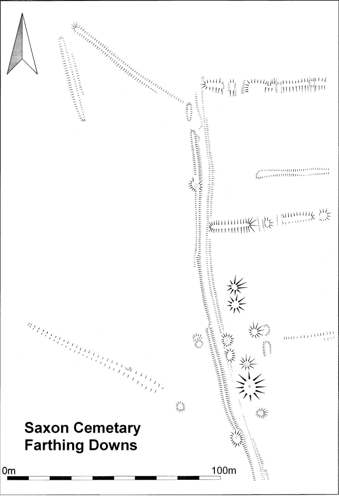

ARCHAEOLOGY
“Farthing Down is a superb example of a multi-period Downland landscape with archaeological evidence for activity from the late Neolithic to the late seventh century AD.”
London Region Archaeology, April 2005 – March 2006; Article: ‘Farthing Down’
Site description:
Farthing Downs is a steep sided chalk ridge which runs north/south as a projecting spur of the North Downs. Running along the ridge are ancient earthworks consisting of a field system (east/west) organised around a linear drove way (north/south). These features are believed to date from the late Iron Age (200 BC) and assumed to be fields associated with nearby settlements on Wooodplace Farm. These features are overlaid by two Saxon barrow cemeteries. There are also isolated barrows to the south and a small flat grave cemetery dating from the same time (C6-7), focused on one of the barrow groups. Farthing Downs has been known as a site of geological and archaeological interest since the 18th Century. The long history of archaeological investigation began in the 18th century, when an unknown individual excavated one of the burial mounds and removed a skeleton. Features recorded to date are:
1871: Burial barrows (also referred to as tumuli or burial mounds)
1939: World War II trenches dug across the Downs, aerial photographs also show bomb craters, doodle-bug craters and the ‘Fox Holes’ for army patrols.
1946/47: Celtic (also referred to as Romano British) field boundaries; tumuli, flat graves (all dated to the Anglo-Saxon period). A report refers to workmen laying a cable in the 1940s uncovering a skeleton. Once this had been established as an ancient burial and not a modern murder the 1940s archaeological surveys by Brian Hope-Taylor began.
An ancient settlement of round houses and/or remains of a Hill Fort have thus far to be discovered.
Archaeological Surveys:

 

John Wickham Flower (1807-1873): Excavation of Farthing Downs 1871: Wickham Flower was at the forefront of the new sciences of archaeology and geology, when in 1871 he excavated and described the principal finds of sixteen burial mounds on Farthing Downs. His research showed the burials were the graves of an Anglo-Saxon community who had lived in the area in the 7th century AD. He worked on a number of Saxon Cemeteries in this area and helped to set up the Croydon Microscopical Club (now the Croydon Natural History and Scientific Society).
Dr Brian Hope-Taylor excavation of flat graves, ancient trackway and Celtic field boundaries 1947/1948:
‘Secrets of Farthing Downs’: An article published in ‘Picture Post’ on October 23rd 1948 gives a detailed description of Hope-Taylor’s survey.
The following is a summery published in the Friends Newsletter, number 16, Spring 2014:
Picture Post, October 23, 1948: Secrets of Farthing Downs
 Picture Post, a prominent photojournalistic magazine published nationally from 1938 to 1957, carried a three page illustrated article telling the story of Brian Hope Taylor’s archaeological excavation of Farthing Downs in the late 1940s. Mr Hope-Taylor (as he is referred to in the article, reflecting the formalities of the day) a resident of Sanderstead, was in the RAF during WWII, but during leaves ‘he walked and pondered’ Farthing Downs until ‘he knew every bump, hollow and tell-tale formation of its surface’ and while doing this, posed himself questions about its historical past. Things came to a head for Hope-Taylor when in 1939 Iron Age pottery and a Saxon skeleton were unearthed while anti-aircraft trenches were being dug across the Downs. In the 1930s the Downs had been clear of scrub and surrounded by open fields and aerial photographs taken by the RAF, at Hope-Taylor’s request, highlighted the need for further investigation. Lines of ancient field systems, trackways and burial mounds, all of which are very familiar to regular walkers and visitors to the Downs today, appeared in ‘astonishing clarity’ and many shadows were recognised by Hope-Taylor as potential archaeology.
Picture Post, a prominent photojournalistic magazine published nationally from 1938 to 1957, carried a three page illustrated article telling the story of Brian Hope Taylor’s archaeological excavation of Farthing Downs in the late 1940s. Mr Hope-Taylor (as he is referred to in the article, reflecting the formalities of the day) a resident of Sanderstead, was in the RAF during WWII, but during leaves ‘he walked and pondered’ Farthing Downs until ‘he knew every bump, hollow and tell-tale formation of its surface’ and while doing this, posed himself questions about its historical past. Things came to a head for Hope-Taylor when in 1939 Iron Age pottery and a Saxon skeleton were unearthed while anti-aircraft trenches were being dug across the Downs. In the 1930s the Downs had been clear of scrub and surrounded by open fields and aerial photographs taken by the RAF, at Hope-Taylor’s request, highlighted the need for further investigation. Lines of ancient field systems, trackways and burial mounds, all of which are very familiar to regular walkers and visitors to the Downs today, appeared in ‘astonishing clarity’ and many shadows were recognised by Hope-Taylor as potential archaeology.
By 1947 Hope=Taylor had established a history of Farthing Downs dating back to 2000 BC (late Neolithic times) and had identified the Celtic field system used between 50 BC and 150 AD. However, the story took an unprecedented turn when, in 1947, plans were revealed to plough up the Downs for agriculture just when Hope-Taylor was at the point of excavating the Saxon burial ground, known to be there from a previous survey carried out in 1871. In 1948, residents, students and amateur enthusiasts celebrated when they heard that following a rigorous campaign Farthing Downs was to be given Ancient Monument status.
We have Mr Hope-Taylor to thank that this important burial ground is preserved for posterity, but why should priority be given to archaeology over food production? Archaeological research fills in the gaps where lack of written documentary evidence is missing. The first Anglo-Saxon invaders arriving in this country in the fifth century BC were not literate, but passed on their history in the form of bardic songs, eventually used by monks as the basis for the Anglo-Saxon Chronicles. But, the article tells us, it is only archaeology which can put the past into context and discover what happened after the Romans left and the Anglo-Saxons moved in. Burials are important indicators – the graves on Farthing Downs are orientated north-south and occupants were buried with grave goods, evidence that they were following pagan traditions. Christian burials are east-west and missionaries arriving from Rome soon dispelled the tradition of favourite objects from life being buried with the deceased for use in Valhalla. The Picture Post article tells us that Farthing Downs burials were dated as late 7th Century and that the skeletons found were 5ft 10ins or more and had longer skulls, different from the Celtic population who were shorter in stature and from the Romans who had shorter skulls.
The excavations carried out by Hope-Taylor were in the best traditions of archaeological practice. They were well thought out, well documented and the finds were treated with care. Sadly previous excavations had not been so careful and important artefacts had been either taken away or sent to museums whose curators often had no idea of where they had come from.
On-going work highlights the importance of Hope-Taylor’s research and his successful campaign to save the site. Recent surveys carried out in 2005-06 by Barry Taylor of London University and Amy Grey Jones of the Museum of London and in 2010/11 by Paul White of Wessex Archaeology confirm Hope-Taylor’s 1940 results and could not have taken place without them. But, are there more ‘Secrets of Farthing Downs’ to be discovered?
Finds from Hope-Taylor’s survey were sent to the Guildford Museum and the Ashmolean Museum (where they are available for study).
Grave finds as listed for a display board from a Hope-Taylor exhibition at Guildford Museum
 :
:
London Region Archaeology, April 2005 – March 2006; Article: ‘Farthing Down’

Publication of Brian Hope-Taylor’s survey post 2001: As reported in the Picture Post article, Brian Hope-Taylor’s survey was well documented by him, but the excavation archives were not published or available until after his death in 200l. The archives are conserved in Edinburgh. (See link below under Wessex Archaeology.)
Excavation for the foundations for the Millennium Cairn 1999:
Excavation as part of National Archaeology Week 2005/2006: Barry Taylor of London University and Amy Grey Jones of the Museum of London organise two surveys which take place in July 2005 and 2006 during National Archaeology Weeks. Descriptions of principal finds from early excavations by John Wickham-Flower in 1871 plus recently available excavation archives of Brian Hope-Taylor’s survey carried out in the 1940s, provided the basis for the 2005/2006 surveys by Barry Taylor and Amy Grey Jones and their team.
.
What did the 2005/2006 surveys hope to find
The surveys re-excavate tumuli (burial barrows) flat graves, ancient trackway and field boundaries which suggest two phases of occupation, the earliest are earthworks of the late prehistoric (late Iron Age) enclosure system and trackway. However, the earthworks may have formed an enclosure for houses and out-buildings and small farms not just for fields and animals as previously believed. Such an enclosure would have protected small farms owned by extended family groupings. The later occupants, Anglo-Saxon communities, used the Downs as a burial ground, creating large burial mounds (barrows) for their most important members. These archaeological features are at their most visible at the northern end of the Downs.
In July 2005 one of the barrows on the northern site, originally excavated by Hope-Taylor was re-opened for reassessment and, at the same time, several sections through the banks of the fields system were recorded. Bronze Age Pottery found during this excavation and cut features recorded by Hope-Taylor suggested two possibilities for further excavation: either an even earlier occupation of the site or an earlier date for the field system.
In July 2006, following geophysical surveys carried out in that spring, large trenches were opened up across sections of the field banks close to the trackway with the principal aim of securing the date of the field system originally thought to be late Iron Age, but now questioned as possibly concealing evidence of earlier occupation. This involved the examination of the cut features identified both from the archive records and the recent geophysical survey. The chosen sections of the field banks, formed mainly of flints were carefully taken apart. Excavation of the ground beneath yielded both fragments of pottery to be used for dating the features and evidence of the furrows made by simple wooden ploughs. Another aim of the research team was to open up trenches of anomalies and features at the northern end also revealed by the geophysics. The most interesting of these, a deep pit dug into the chalk, possibly used for grain storage, contained fragments of pottery also useful for dating.
Most of the fragments of pottery found in 2006 appear to date from the late Iron Age (200 BC) but analysis will confirm this. Fragments of Roman pottery (Samian ware) which were imported from Gaul, were also found during the excavations this year adding to the Roman artefacts found by Hope-Taylor in the 1940s. The late Iron Age features, ditch sections, inter-cutting pits and discrete scatters of pottery, recorded by Hope-Taylor, suggest that the Downs were both farmed and supported a small settlement and that the Downs continued to be occupied following the Roman invasion of 43 AD. Recent surveys make these possibilities look all the more likely. There is, so far, no conclusive evidence of a Bronze Age settlement but results of the recent excavations and a compilation of all previous work was to be ready for publication later in 2006 (2015: still not published). (Information from English Heritage)
Grave Finds